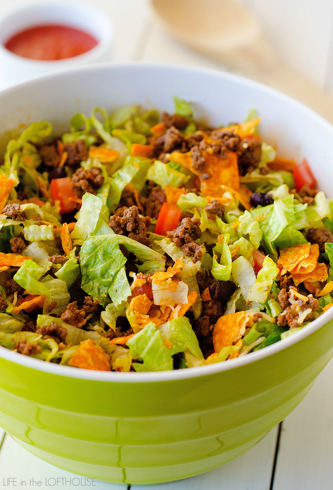
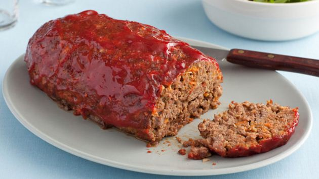
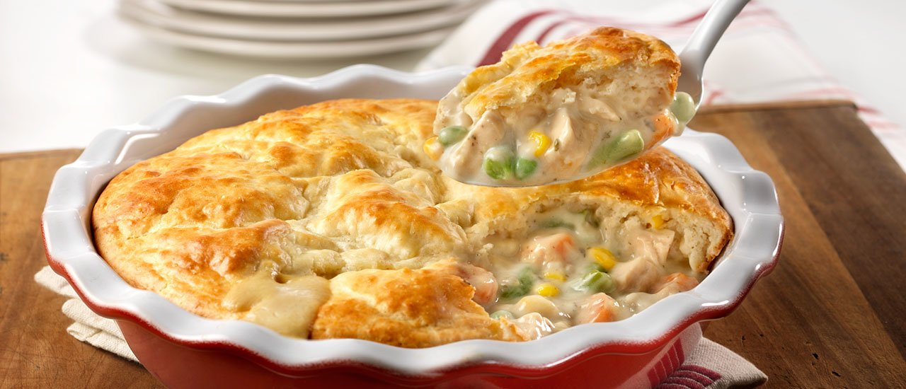
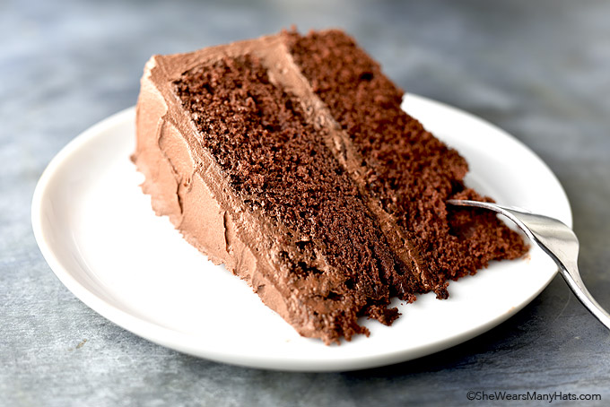

<!DOCTYPE html>
<html lang="en" dir="ltr">
  <head>
    <meta charset="utf-8">
    <title>My Favorite Recipes</title>
    <style>
    img {
        display: block;
        margin-left: auto;
        margin-right: auto;
        height: 250px;
        width: 350px;
         border: "2";
    }
  </head>
  <body background="websitebackground.jpg">
  <h1>My Favorite Recipes</h1><br>
  <table style="width:100%" border="2">
    <tr>
      <th></th>
      <th></th>
    </tr>
    <tr>
      <th>Taco Salad</th>
      <th>Meatloaf</th>
      <th>Chicken Pot Pie</th>
      <th>Chocolate Cake</th>
      <th>Chocolate Chip Cookies</th>
    </tr>
  <h2>Taco Salad</h2><br>
  <br>
<table style="width:100%" border="1">
    <tr>
      <th>Ingredients</th>
      <th>Directions</th>
    </tr>
    <tr>
      <td><p>1 pound lean ground beef
  1 packet (1.25 oz) taco seasoning
  2 Romaine lettuce hearts, rinsed then chopped
  1 cup black beans, rinsed
  1 large tomato, seeded then chopped
  1/2 cup shredded cheddar cheese
  1 cup nacho cheese Doritos, broke into bite size pieces
  1 cup Catalina dressing
  <a href="https://life-in-the-lofthouse.com/doritos-taco-salad/">click here</a></p><br></td>
      <td><p>Brown and crumble ground beef in a large skillet over medium-high heat. Drain grease. Add taco seasoning and water called for on packet. Stir until mixture comes to a boil. Reduce heat to low and simmer 10 minutes. Remove from heat and let meat cool slightly.
In a large salad bowl add chopped lettuce, black beans, tomato and cheese. Add slightly cooled ground beef and gently toss to combine everything. Serve now, or chill in refrigerator until ready to eat.
When ready to serve, add Doritos chips and dressing to salad. Toss to coat. Serve.</p><br></td>
<h2>Meatloaf</h2><br>

<tr>
  <th>Ingredients</th>
  <th>Directions</th>
</tr>
<tr>
  <td><p>6 ounces garlic-flavored croutons
  1/2 teaspoon ground black pepper
  1/2 teaspoon cayenne pepper
  1 teaspoon chili powder
  1 teaspoon dried thyme
  1/2 onion, roughly chopped
  1 carrot, peeled and broken
  3 whole cloves garlic
  1/2 red bell pepper
  18 ounces ground chuck
  18 ounces ground sirloin
  1 1/2 teaspoon kosher salt
  1 egg
  <a href="https://www.foodnetwork.com/recipes/alton-brown/good-eats-meat-loaf-recipe-1937673">click here</a></p><br></td>
  <td><p>Heat oven to 325 degrees F.

In a food processor bowl, combine croutons, black pepper, cayenne pepper, chili powder, and thyme. Pulse until the mixture is of a fine texture. Place this mixture into a large bowl. Combine the onion, carrot, garlic, and red pepper in the food processor bowl. Pulse until the mixture is finely chopped, but not pureed. Combine the vegetable mixture, ground sirloin, and ground chuck with the bread crumb mixture. Season the meat mixture with the kosher salt. Add the egg and combine thoroughly, but avoid squeezing the meat.

Pack this mixture into a 10-inch loaf pan to mold the shape of the meatloaf. Onto a parchment paper-lined baking sheet, turn the meatloaf out of the pan onto the center of the tray. Insert a temperature probe at a 45 degree angle into the top of the meatloaf. Avoid touching the bottom of the tray with the probe. Set the probe for 155 degrees.

Combine the catsup, cumin, Worcestershire sauce, hot pepper sauce and honey. Brush the glaze onto the meatloaf after it has been cooking for about 10 minutes.</p><br></td>
<h2>Chicken Pot Pie</h2><br>
<br>
<table style="width:100%" border="1">
<tr>
  <th>Ingredients</th>
  <th>Directions</th>
</tr>
<tr>
  <td><p>1 can Campbell's® Condensed Cream of Chicken Soup	or Campbell's® Condensed 98% Fat Free Cream of Chicken Soup
  1 cup reduced fat (2%) milk
  1 package (12 ounces) frozen mixed vegetables (carrots, green beans, corn, peas), thawed (about 2 1/4 cups)
  1 cup cubed cooked chicken or turkey
  1 egg
  1 cup biscuit baking mix
  <a href="https://www.campbells.com/kitchen/recipes/easy-chicken-pot-pie/">click here</a></p><br></td>
  <td><p>Step 1
Heat the oven to 400°F.  Stir the soup, 1/2 cup milk, vegetables and chicken in a 9-inch pie plate.

Step 2
Stir the remaining milk, egg and baking mix in a small bowl.  Spread the batter over the chicken mixture.
Step 3
Bake for 20 minutes or until the topping is golden brown</p><br></td>
<h2>Chocolate Cake</h2><br>
<br>
<table style="width:100%" border="1">
<tr>
  <th>Ingredients</th>
  <th>Directions</th>
</tr>
<tr>
  <td><p>2 1/2 cups all-purpose flour
  3/4 cup good cocoa powder (sift to remove any lumps)
  1 teaspoon baking soda
  1/4 teaspoon salt
  12 tablespoons (1  1/2 sticks) unsalted butter, room temperature
  2 cups granulated sugar
  3 large eggs, lightly beaten
  2 teaspoons vanilla extract
  1 1/2 cups buttermilk
  <a href="https://shewearsmanyhats.com/perfect-chocolate-cake-recipe/">click here</a></p><br></td>
  <td><p>Preheat oven to 350-degrees F. Butter and flour two 9-inch*** round cake pans.
In a large bowl, whisk together flour, cocoa, baking soda and salt. Set aside.
In a large mixing bowl, use an electric mixer to beat together butter and sugar on medium-high speed until totally combined and smooth, stopping to scrape down bowl at least twice; about 5 minutes.
Add beaten eggs and vanilla. Beat together, stopping to scrape down bowl once. Continue to beat on medium-high for 1-2 minutes until fluffy.
Add the flour mixture to the butter mixture in thirds, alternating with buttermilk; stop to scrape down bowl twice.
Divide batter between prepared pans.
Bake at 350-degrees F until toothpick or wooden skewer inserted in center comes out clean, about 30-35 minutes.
Cool in pans 10 minutes. Invert onto cooling racks; cool completely.
Once cool, frost and serve. Or to store in freezer, wrap cake layers separately in 2 layers of plastic wrap, insert into a large freezer ziptop plastic bag, removing extra air and store in freezer for up to 2 months.</p><br></td>
<h2>Chocolate Chip Cookies</h2><br>
<br>
<table style="width:100%" border="1">
<tr>
  <th>Ingredients</th>
  <th>Directions</th>
</tr>
<tr>
  <td><p>3 cups (380 grams) all-purpose flour
  1 teaspoon baking soda
  1 teaspoon fine sea salt
  2 sticks (227 grams) unsalted butter, at room temperature
  1/2 cup (100 grams) granulated sugar
  1 1/4 cups (247 grams) lightly packed light brown sugar
  2 teaspoons vanilla
  2 large eggs, at room temperature
  2 cups (340 grams) semi sweet chocolate chips
  <a href="https://www.handletheheat.com/bakery-style-chocolate-chip-cookies/">click here</a></p><br></td>
  <td><p>Preheat oven to 350ºF. Line baking sheets with parchment paper.

In a medium bowl combine the flour, baking soda, and salt.

In the bowl of an electric mixer beat the butter, granulated sugar, and brown sugar until creamy, about 2 minutes. Add the vanilla and eggs. Gradually beat in the flour mixture. Stir in the chocolate chips.

If time permits, wrap dough in plastic wrap and refrigerate for at least 24 hours but no more than 72 hours. This allows the dough to “marinate” and makes the cookies thicker, chewier, and more flavorful. Let dough sit at room temperature just until it is soft enough to scoop.

Divide the dough into 3-tablespoon sized balls using a large cookie scoop and drop onto prepared baking sheets.

Bake for 12-15 minutes, or until golden brown. Cool for 5 minutes before removing to wire racks to cool completely.

Although I prefer cookies fresh from the oven, these can be stored in an airtight container for up to 5 days. See post for storage tips.</p><br></td>
  </body>
</html>
